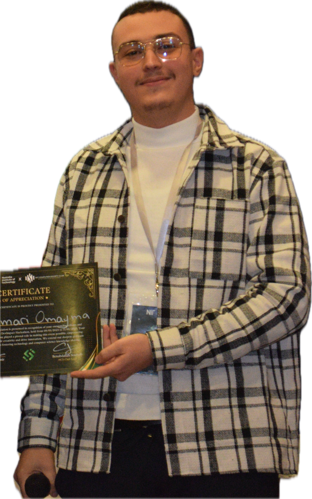

Ouadahi Mohand
Belkacem
I design and ship AI systems, from clinical decision support and medical imaging to production ML pipelines processing terabytes of telecom data. Currently a research intern at ÉTS Montréal (Synchromédia lab), working on the interpretable decomposition of degraded historical documents, while continuing my AI engineering work at Numidia Institute of Technology.

I'm a Software & AI Engineer working at the intersection of machine learning, medical AI, and full-stack engineering. My final-year academic record (16.64/20) sits alongside production work: a recommendation engine now serving Ooredoo Algeria's entire customer base, and a multimodal medical assistant combining speech recognition, imaging models, and retrieval-augmented clinical reasoning.
Outside of core engineering, I mentor student teams for national hackathons, sit on technical juries, and organize DevImpact, a multi-institution hackathon I built to grow Algeria's AI and software talent pipeline. I was also selected for Junction Asia, one of the most competitive international hackathon programs.
Since September 2026 I have been a research intern at the Synchromédia lab of ÉTS Montréal under Professor Mohamed Cheriet, where I study how to separate ink, paper and degradation in damaged document images using constrained, interpretable models. My longer-term goal is a PhD in AI.
I care about building things that actually ship — from privacy-first inference architectures to research-grade models that beat published benchmarks.
Where I've worked
Research in Montréal, full-time AI engineering, an internship at a national telecom, and freelance client work — with AI in every one of them.
- Research project: Autonomous and Interpretable Decomposition of Degraded RGB Documents, supervised by Prof. Mohamed Cheriet and co-supervised by Saida Khazri, within an emerging ÉTS–NIT research collaboration.
- Problem: a degraded page mixes several physical layers (ink, paper, stains, bleed-through, fading) but an RGB scan records only 3 values per pixel. Recovering more layers than observed channels is an underdetermined inverse problem with infinitely many valid answers.
- Approach: extending PRISM, the lab's interpretable decomposition model for multispectral documents, to the RGB case with sparsity, spatial-coherence and physics-informed constraints and automatic selection of the number of layers.
- Gap addressed: PRISM on RGB has only been scored as binarization; whether its separate layers are correct has never been measured, because no layer-level ground truth exists. Building the foundations (document physics, colour spaces, metrics, PRISM reproduction on multispectral data) toward a controlled benchmark.
- Designing and building a multimodal AI medical assistant integrating ASR, X-ray/MRI imaging analysis (DenseNet-121, Xception, EfficientNet-B2), and OCR-based document automation.
- Implementing RAG-powered clinical decision support using a ChromaDB vector database (1,200+ medical documents) with LLM orchestration (Qwen-72B, Mixtral-8x22B, DeepSeek-67B) for evidence-based diagnosis verification.
- Designing a privacy-first local inference architecture for secure medical document processing.
- Designed and deployed a personalized subscription recommendation system now live in production for Ooredoo Algeria's entire customer base.
- Built a Big Data architecture using PySpark and Cloudera Hadoop to process 400+ subscriber data files of 40–50 GB each (16+ TB total).
- Delivered a complete end-to-end ML pipeline: feature engineering, model benchmarking, hyperparameter tuning, and production deployment.
- Built a comprehensive school management platform covering enrollment, staff management, payroll processing, and a parent communication portal.
- Integrated AI-powered facial recognition to automate staff attendance tracking and parent-detection for secure child pickup notifications.
- Designed and developed a full-stack web application for travel program management, an agency dashboard, and a client portal with integrated third-party APIs.
- Mentored student teams participating in national hackathons on AI system design, full-stack development, and ML pipelines.
- Served as technical jury member evaluating student projects at the DevImpact Hackathon.
- Organized and managed logistics for DevImpact, attracting participants from multiple Algerian higher-education institutions.
- Built institutional partnerships and managed external collaborations with organizations, companies, and universities.
- Represented NIT at national and international events and competitions; coordinated sponsorships and technical event logistics.
Systems I've built
Independent research and product builds spanning medical AI, speech, computer vision, and mobile.
AI-Powered Medical Assistant Pipeline
End-to-end clinical decision support combining ASR, OCR, and deep learning for medical imaging, including a custom CNN for Alzheimer's detection.
DiaryAI — AI Personal Journal
Multi-stage NLP pipeline with sentiment analysis, emotion classification, mood scoring, HealthKit biometric integration, and a voice-to-insight pipeline.
Handwritten Prescription OCR
End-to-end OCR pipeline using CRAFT, TrOCR, and Tesseract with fuzzy medication-database matching and LLM semantic classification for Algerian prescriptions.
BMI Prediction from Facial Images
CNN-based model exceeding accuracy benchmarks from prior published research on the same dataset via novel preprocessing, augmentation, and architecture strategies.
Advanced ASR for Quran & Prayer
Custom speech recognition system with real-time mispronunciation detection; full MVP shipped on a Flutter / FastAPI / PostgreSQL stack.
PPG-Based Heart Rate Analysis
Smartphone photoplethysmography signal acquisition with real-time peak detection, synthetic waveform generation, and an HRV-enriched training-ready dataset pipeline.
Current & ongoing research
Document image analysis at ÉTS Montréal, and multimodal medical AI from my work at NIT.
Autonomous and Interpretable Decomposition of Degraded RGB Documents
Historical manuscripts degrade: ink fades or bleeds through the page, paper yellows, stains and foxing appear. Separating these effects is key to restoring and reading the document, but most archives are digitized in plain RGB, which records only three values per pixel while the page contains more physical layers than that. Decomposing it is therefore an underdetermined inverse problem: many different combinations of ink, paper and damage explain the same pixel. The research question set for this project is whether an interpretable, rank-adaptive decomposition model can be constrained to recover meaningful components from degraded RGB documents despite having fewer observed channels than latent components. The work has three objectives: formalize the underdetermined RGB problem and build a controlled benchmark with layer-level ground truth; adapt the lab's PRISM model to RGB with sparsity, spatial and physically informed constraints; and validate interpretability, layer accuracy, recombination fidelity and handwriting recovery on synthetic and real documents.
Multimodal Deep/Machine Learning for Pediatric Appendicitis Diagnosis
Pediatric appendicitis is a common surgical emergency where timely and accurate diagnosis is critical, yet ultrasound interpretation remains highly operator-dependent and single-modality models have shown limited clinical reliability. This work presents a complete multimodal deep and machine learning study for automated pediatric appendicitis diagnosis using the Regensburg Pediatric Appendicitis Dataset (782 patients, 2,097 ultrasound images, 58 clinical features). On structured clinical data, XGBoost achieves 94.23% accuracy with only 2 false negatives on the held-out test set. For ultrasound image classification, the proposed ScaleAware-Attention architecture surpasses the published image-only state of the art by 0.06 AUROC points. A Deep Multimodal Fusion Network combining the vision module with a GANDALF-based tabular branch through cross-attention achieves 100% recall on healthy patients and 100% precision on appendicitis predictions — a +19.7 percentage point AUROC improvement over the best image-only model.
Tools & technologies
The stack I reach for across AI, mobile, backend, and data engineering work.
Languages
ML / AI
Mobile
Big Data
Databases
Research Areas
APIs & Design
Academic background
- Final Year GPA: 16.64 / 20 (4.0 / 4.0 equivalent)
- Overall GPA: 14.36 / 20 (3.7 / 4.0 equivalent)
Recognition & awards
Academic Excellence
Final Year GPA 16.64/20 (4.0/4.0 equivalent), Numidia Institute of Technology, 2025.
IELTS Band 7
International certification of fluent English-language proficiency.
Cisco Networking Certification
Professional certification in networking fundamentals and infrastructure.
Junction Asia Hackathon
Accepted into one of the most competitive international hackathon programs in Asia.
Research Achievement
BMI prediction model surpassing published state-of-the-art benchmarks on the Regensburg dataset.
Production Deployment at Ooredoo
ML recommendation system deployed at national scale for Algeria's leading telecom provider.
Let's build something
worth shipping.
Open to graduate research positions, research collaborations, AI engineering roles, and freelance builds. The fastest way to reach me is email.